TP pfSense HA : préparer le lab et installer pfSense¶
Résumé
Ce premier TP construit le laboratoire utilisé par tout le parcours. On crée dans l'hyperviseur les trois réseaux virtuels du lab (WAN, LAN et le lien de synchronisation SYNCHRO-PFSENSE), puis deux machines virtuelles identiques, pfsense-19 et pfsense-20, avec trois cartes réseau chacune.
On installe ensuite pfSense CE 2.7.2 sur les deux VM, puis on fait les premiers réglages dans leur console : l'affectation des trois interfaces, dans le même ordre sur les deux pare-feux, et l'adresse LAN qui permettra d'ouvrir l'interface web depuis le PC hôte.
| Propriété | Valeur |
|---|---|
| Difficulté | Débutant à intermédiaire |
| Durée estimée | 1 h 30, dont quelques minutes d'attente pendant l'installation |
| Version décrite | pfSense CE 2.7.2, VMware Workstation Pro (17, 25H2 ou 26H1) ou Oracle VirtualBox 7 |
| Place dans le parcours | Partie 2 sur 8 du parcours Cluster pfSense en haute disponibilité |
| Dernière mise à jour | 2026-11-07 |
Convention de lecture
Chaque action commence par un repère qui indique où elle se fait : 🖥️ PC hôte (hyperviseur, navigateur, terminal), 1️⃣ primaire pfsense-19, 2️⃣ secondaire pfsense-20, 1️⃣ 2️⃣ les deux pare-feux. Le plan d'adressage, les comptes et mots de passe et le dimensionnement des VM sont sur la page d'accueil du parcours : la garder ouverte pendant le TP.
1. Prérequis¶
Matériel et logiciels
- Un PC avec 8 Go de RAM au minimum, environ 50 Go d'espace disque libre et la virtualisation matérielle (Intel VT-x ou AMD-V) activée dans le BIOS/UEFI.
- Un hyperviseur au choix :
- VMware Workstation Pro : gratuit pour tous les usages depuis novembre 2024. Le téléchargement se fait depuis le portail de support Broadcom, avec un compte gratuit, en choisissant la variante « Personal ». La version 26H1 est la plus récente à la date de rédaction.
- Oracle VirtualBox 7, gratuit.
- L'image ISO de pfSense CE 2.7.2, téléchargée et vérifiée (voir les logiciels à télécharger).
- Un accès Internet sur le PC hôte : il est nécessaire pour la mise à jour finale.
Connaissances
- Savoir créer une machine virtuelle.
- Connaître l'adressage IPv4 : adresse, masque, notation CIDR (
/24,/30), passerelle. - Avoir une première idée de ce qu'est une règle de pare-feu et le NAT. L'article Configurer le NAT et le routage avec nftables présente ces notions sous Linux.
- Avoir lu le cours de la partie 1.
Prendre des instantanés
Un instantané (snapshot) enregistre l'état complet d'une VM et permet d'y revenir en un clic. Le parcours suggère plusieurs points de sauvegarde (🛟), récapitulés dans les instantanés conseillés. Ils évitent de tout recommencer après une erreur.
2. Créer les réseaux virtuels¶
Le lab utilise trois réseaux :
- WAN : il représente l'extérieur et donne accès à Internet grâce au NAT de l'hyperviseur.
- LAN : il représente le réseau interne de l'entreprise. Le PC hôte y est connecté, ce qui permet d'ouvrir l'interface web des pare-feux depuis son navigateur.
- SYNCHRO-PFSENSE : c'est un « câble virtuel » qui relie uniquement les deux pare-feux.
| Réseau du TP | VMware Workstation | VirtualBox |
|---|---|---|
WAN 192.168.8.0/24 |
VMnet8, type NAT | Réseau NAT (NAT Network) |
LAN 192.168.19.0/24 |
VMnet19, type Host-only | Réseau privé hôte (Host-only) |
SYNCHRO-PFSENSE 192.168.254.0/30 |
LAN segment | Réseau interne (Internal Network) |
🖥️ Sur le PC hôte, dans VMware Workstation :
- Ouvrir Edit > Virtual Network Editor, puis cliquer sur Change Settings (droits administrateur requis sous Windows).
- Sélectionner VMnet8 (type NAT) et saisir Subnet IP
192.168.8.0et Subnet mask255.255.255.0. - Cliquer sur NAT Settings… et vérifier que Gateway IP vaut
192.168.8.2. C'est la valeur par défaut : l'adresse.1est réservée au PC hôte. - Cliquer sur Add Network…, choisir VMnet19, puis sélectionner Host-only. Saisir Subnet IP
192.168.19.0et le masque255.255.255.0. Laisser cochée l'option Connect a host virtual adapter to this network : le PC hôte reçoit alors l'adresse192.168.19.1sur ce réseau. - Cliquer sur Apply, puis sur OK.
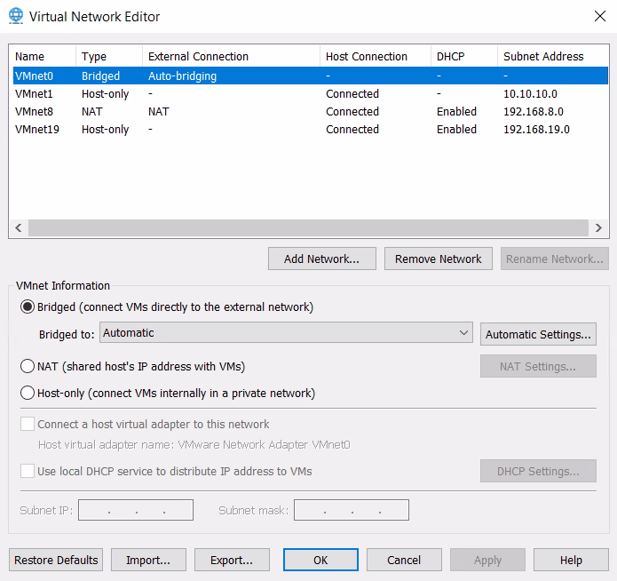
VMware — éditeur de réseaux virtuels : VMnet8 en NAT (192.168.8.0) et VMnet19 en Host-only (192.168.19.0)
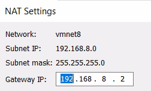
VMware — paramètres NAT de VMnet8 : passerelle 192.168.8.2
Pourquoi changer le sous-réseau de VMnet8 ?
À l'installation, VMware choisit au hasard un sous-réseau pour VMnet8 (par exemple 192.168.153.0/24), différent d'un PC à l'autre. Le fixer à 192.168.8.0/24 permet de suivre le TP à l'identique. L'option DHCP de VMnet19 peut rester active : aucune machine du TP ne l'utilise.
Le réseau SYNCHRO-PFSENSE ne se crée pas ici. C'est un LAN segment, créé depuis les paramètres de la VM (voir l'étape 3).
🖥️ Sur le PC hôte, dans VirtualBox :
- Ouvrir le Gestionnaire de réseau : Fichier > Outils > Gestionnaire de réseau, ou le volet Outils > Réseau.
- Dans l'onglet Réseaux NAT, cliquer sur Créer. Nommer le réseau
WAN-PFSENSEet saisir le préfixe IPv4192.168.8.0/24. L'option DHCP n'a pas d'importance. La passerelle sera automatiquement192.168.8.1. - Dans l'onglet Réseaux privés hôte, cliquer sur Créer. Choisir Configurer l'adaptateur manuellement avec l'adresse IPv4
192.168.19.1et le masque255.255.255.0. Dans l'onglet Serveur DHCP, décocher Activer le serveur. - Le réseau SYNCHRO-PFSENSE est un réseau interne : il n'a pas besoin d'être créé à l'avance. Il existe dès qu'une carte réseau est rattachée à un réseau interne portant ce nom.
Ne pas utiliser le mode « NAT » simple pour le WAN
En mode NAT (et non Réseau NAT), VirtualBox crée un réseau privé pour chaque VM : les deux pare-feux ne se voient pas côté WAN. Chacun se croit alors seul et se déclare MASTER de la VIP WAN, et le cluster ne peut pas fonctionner. Le mode Réseau NAT place au contraire les deux VM sur le même réseau.
Hôte Linux ou macOS
Sur ces systèmes, VirtualBox n'autorise par défaut que les réseaux privés hôte compris dans 192.168.56.0/21. Pour utiliser 192.168.19.0/24, ajouter la ligne * 192.168.0.0/16 dans le fichier /etc/vbox/networks.conf, à créer s'il n'existe pas.
3. Créer les deux machines virtuelles¶
🖥️ Sur le PC hôte, créer deux VM identiques, nommées pfsense-19 et pfsense-20.
| Paramètre | Valeur | Explication |
|---|---|---|
| Système invité | Other > FreeBSD 14 64-bit (VMware) ou BSD > FreeBSD (64-bit) (VirtualBox) | pfSense 2.7.2 repose sur FreeBSD 14. Si cette version n'est pas proposée, choisir la version 64 bits de FreeBSD la plus récente. |
| Processeur | 1 vCPU | Largement suffisant pour un lab. |
| Mémoire | 1 Go (2 Go si la mise à jour de la partie 8 est prévue) | 1 Go est le minimum officiel et suffit pour tout le TP (512 Mo fonctionnent en pratique pour un lab). La mise à jour demande plus : avec 1 Go, elle peut échouer faute de mémoire (voir la partie 8). |
| Disque | 20 Go | Le minimum officiel est de 8 Go. |
| Lecteur CD | L'ISO pfSense CE 2.7.2 | — |
| Cartes réseau | 3 cartes, dans cet ordre : WAN, LAN, SYNCHRO-PFSENSE | pfSense les nommera em0, em1 et em2 dans cet ordre. |
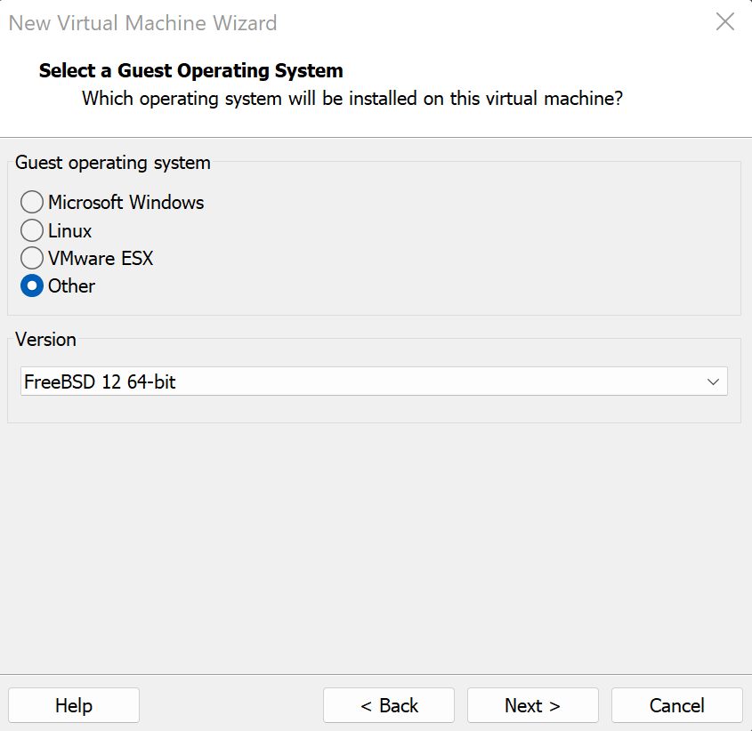
VMware — choix du système invité : Other, puis FreeBSD 64 bits
Dans VM > Settings… > Hardware :
- Network Adapter : Custom >
VMnet8 (NAT); - Network Adapter 2 (bouton Add… > Network Adapter) : Custom >
VMnet19; - Network Adapter 3 : choisir LAN segment, cliquer sur LAN Segments… > Add, nommer le segment
SYNCHRO-PFSENSE, valider, puis le sélectionner dans la liste.
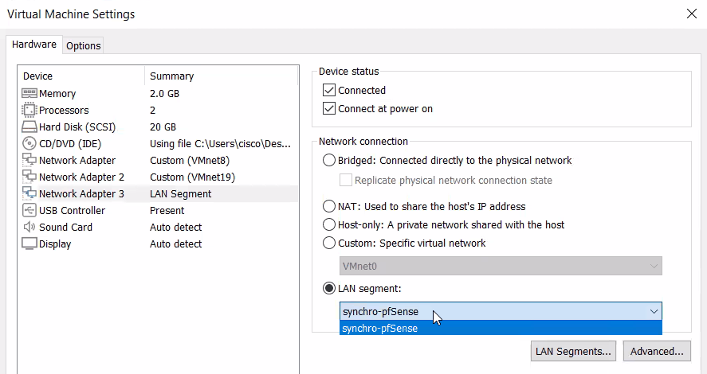
VMware — 3ᵉ carte réseau reliée au LAN segment de synchronisation
Qu'est-ce qu'un LAN segment ?
Un LAN segment relie entre elles les VM qui y sont connectées, comme un switch privé, sans passer par le Virtual Network Editor.
- Contrairement à un VMnet, il ne crée aucune carte réseau virtuelle sur le PC hôte et ne fournit aucun service DHCP. Il faut donc obligatoirement définir des adresses IP statiques dans chaque VM, ici dans pfSense.
- Il accepte n'importe quel masque, dont le
/30. Un VMnet, lui, est aussi relié au PC hôte : le réseau de synchronisation ne serait plus réservé aux deux pare-feux. De plus, VMware déconseille de modifier le masque des VMnets, et VMware Workstation ne permet pas d'y descendre en dessous d'un/29(6 hôtes).
Dans Configuration > Réseau :
| Carte | Mode d'accès réseau | Nom |
|---|---|---|
| Adapter 1 | Réseau NAT | WAN-PFSENSE |
| Adapter 2 | Réseau privé hôte | l'adaptateur créé en 192.168.19.1 |
| Adapter 3 | Réseau interne | SYNCHRO-PFSENSE (saisir le nom) |
Pour chacune des trois cartes, déplier Avancé et régler :
- Type d'interface :
Intel PRO/1000 MT Desktop (82540EM). pfSense nommera alors les interfacesem0,em1etem2, comme dans ce TP. - Mode Promiscuité : Tout autoriser (Allow All). CARP utilise une adresse MAC virtuelle (
00:00:5e:00:01:xx). Sans ce réglage, VirtualBox rejette les trames destinées à cette adresse et la bascule échoue. C'est la recommandation officielle de Netgate pour la virtualisation.
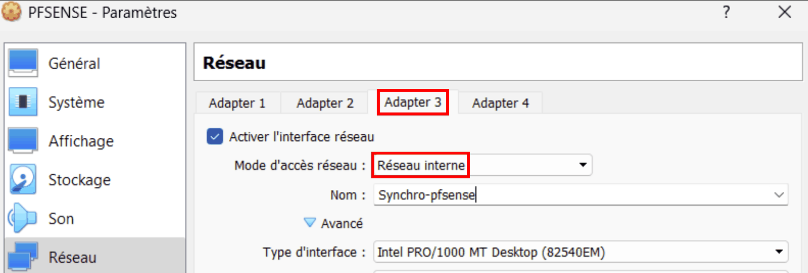
VirtualBox — 3ᵉ carte en « Réseau interne » dédié à la synchronisation
Installation automatique
Si l'assistant de VirtualBox propose une « installation sans surveillance » (unattended installation), la désactiver : pfSense s'installe manuellement.
Ne pas modifier les adresses MAC des cartes réseau
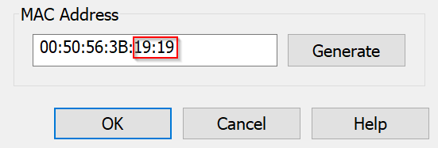
VMware — champ MAC Address d'une carte réseau : à laisser tel quel
Il peut être tentant de personnaliser l'adresse MAC de chaque carte (VM > Settings… > Network Adapter > Advanced > MAC Address), pour reconnaître le réseau d'une interface à la lecture de son adresse. En pratique, cela s'est révélé source de problèmes réseau dans certains cas. Laisser les adresses générées par l'hyperviseur.
Vérifier l'ordre des interfaces
La synchronisation XML-RPC recopie les règles interface par interface. Netgate exige donc que les interfaces soient affectées dans le même ordre sur les deux nœuds : em0 = WAN, em1 = LAN, em2 = PFSYNC. Si une VMware récente nomme les interfaces vmx0, vmx1, vmx2 (carte de type vmxnet3), ce n'est pas grave : il suffit d'adapter les noms en respectant le même ordre sur les deux pare-feux.
4. Installer pfSense sur les deux VM¶
1️⃣ 2️⃣ Réaliser cette installation sur les deux VM. Elles peuvent être installées en parallèle.
-
Démarrer la VM sur l'ISO. Sur l'écran Copyright and Trademark Notices, valider Accept avec Enter.
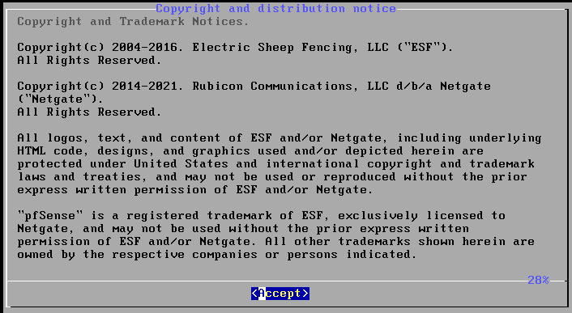
Installeur — écran de copyright : Accept
-
Sur l'écran Welcome to pfSense!, choisir Install — Install pfSense, puis OK.
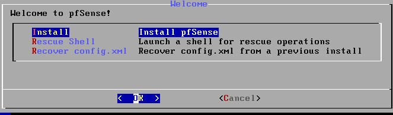
Installeur — choisir Install pfSense
-
Sur l'écran de partitionnement (How would you like to partition your disk?), choisir Auto (ZFS) — Guided Root-on-ZFS, puis OK.
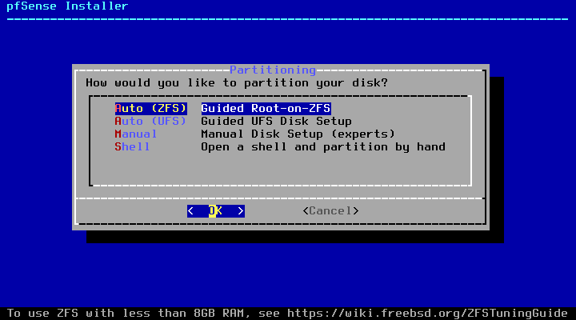
Installeur 2.7.2 — partitionnement : Auto (ZFS)
ZFS ou UFS ?
ZFS est un système de fichiers moderne qui résiste mieux aux coupures de courant brutales. C'est le choix par défaut depuis pfSense 2.6. Le message « To use ZFS with less than 8GB RAM… » est purement informatif : il ne pose aucun problème dans ce lab. Selon la version de l'installeur, l'ordre des options peut varier, ou un écran de choix du clavier (Keymap Selection) peut apparaître avant. Dans ce cas, garder le clavier par défaut.
-
Le menu ZFS Configuration s'affiche. Descendre sur T — Pool Type/Disks et valider avec Enter.
-
Choisir stripe — No Redundancy. La VM n'a qu'un disque : la redondance n'aurait aucun sens.
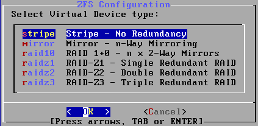
Type de pool ZFS : stripe
-
Cocher le disque
da0avec la barre d'espace (une étoile[*]apparaît), puis valider OK.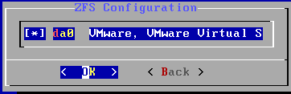
Sélection du disque da0 avec la barre d'espace
-
De retour au menu, la ligne indique stripe: 1 disk. Remonter sur >>> Install — Proceed with Installation et valider.
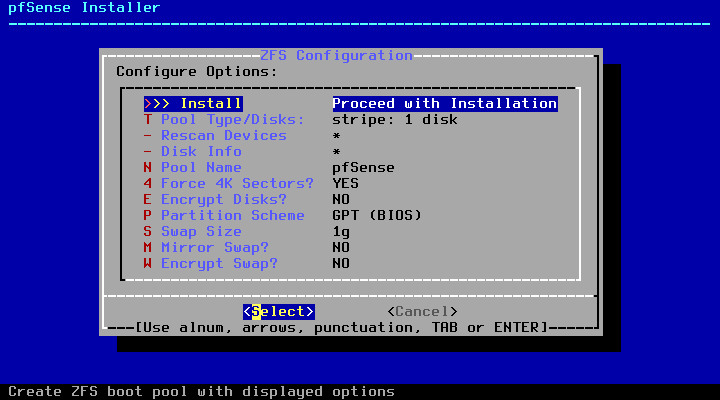
Menu ZFS Configuration : stripe sur 1 disque, prêt pour Install
-
Sur l'avertissement Last Chance!, choisir YES (flèche gauche, puis Enter). Le disque virtuel est vide, rien n'est perdu.
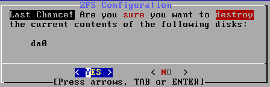
Dernière confirmation avant l'effacement du disque : YES
-
Patienter pendant la vérification et l'extraction des fichiers (une à deux minutes).
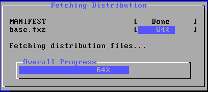
Extraction des fichiers
-
Sur l'écran Complete, choisir Reboot.
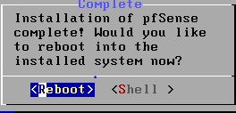
Fin de l'installation : Reboot
Éjecter l'ISO
Si la VM redémarre sur l'installeur au lieu du système installé, éteindre la VM, déconnecter le lecteur CD (VMware : décocher Connected et Connect at power on ; VirtualBox : Retirer le disque du lecteur virtuel), puis la redémarrer.
🛟 Point de sauvegarde : 🖥️ prendre un instantané des deux VM, nommé 01-installation-terminee.
5. Configuration initiale en console¶
Au premier démarrage, pfSense affiche un menu numéroté dans la console de la VM. Le clavier y est en QWERTY : voir les annexes pour passer en AZERTY.
5.1 Affecter les interfaces (option 1)¶
pfSense attribue automatiquement em0 au WAN et em1 au LAN, mais pas em2. L'option 1) Assign Interfaces permet de tout affecter explicitement, dans le même ordre sur les deux pare-feux.
1️⃣ 2️⃣ Sur les deux pare-feux : saisir 1, puis répondre aux questions.
| Question affichée | Réponse | Explication |
|---|---|---|
Should VLANs be set up now [y\|n]? |
n |
Pas de VLAN dans ce TP. |
Enter the WAN interface name… |
em0 |
Première carte = VMnet8 (NAT). |
Enter the LAN interface name… |
em1 |
Deuxième carte = VMnet19. |
Enter the Optional 1 interface name… |
em2 |
Troisième carte = LAN segment SYNCHRO-PFSENSE. Elle s'appellera OPT1 jusqu'à son renommage en PFSYNC. |
Enter the Optional 2 interface name… |
Enter (vide) | Plus d'autre carte. |
Do you want to proceed [y\|n]? |
y |
— |
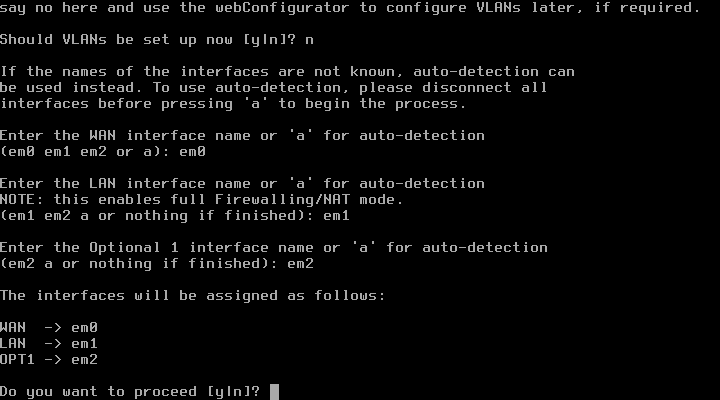
Console — affectation des interfaces : WAN em0, LAN em1, OPT1 em2
5.2 Donner son adresse IP au LAN (option 2)¶
L'adresse LAN par défaut, 192.168.1.1, n'est pas dans le réseau du PC hôte (192.168.19.0/24). Il faut la changer pour pouvoir ouvrir l'interface web.
1️⃣ 2️⃣ Sur chaque pare-feu : saisir 2, puis 2 pour choisir l'interface LAN.
| Question affichée | 1️⃣ pfsense-19 |
2️⃣ pfsense-20 |
Explication |
|---|---|---|---|
Configure IPv4 address LAN interface via DHCP? (y/n) |
n |
n |
Un pare-feu a une adresse fixe. |
Enter the new LAN IPv4 address |
192.168.19.19 |
192.168.19.20 |
— |
Enter the new LAN IPv4 subnet bit count |
24 |
24 |
Masque 255.255.255.0. |
For a WAN, enter the new LAN IPv4 upstream gateway address |
Enter | Enter | Pas de passerelle sur un LAN. |
Configure IPv6 address LAN interface via DHCP6? (y/n) |
n |
n |
Pas d'IPv6 dans ce TP. |
Enter the new LAN IPv6 address |
Enter | Enter | — |
Do you want to enable the DHCP server on LAN? (y/n) |
n |
n |
Deux serveurs DHCP sur le même réseau se feraient concurrence. |
Do you want to revert to HTTP as the webConfigurator protocol? (y/n) |
n |
n |
On garde HTTPS, chiffré. |
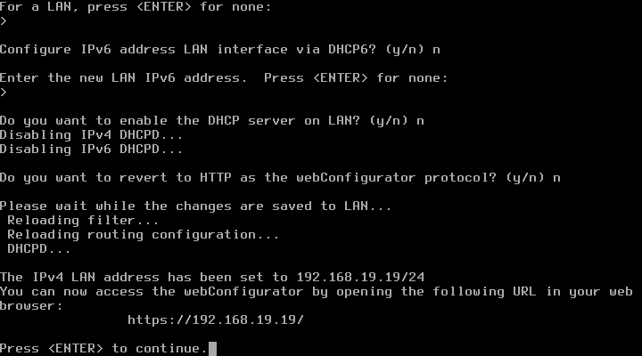
Console — fin de la configuration de l'adresse LAN du primaire
Vérification
🖥️ Depuis le PC hôte, la commande ping 192.168.19.19 puis ping 192.168.19.20 doit recevoir des réponses. Si ce n'est pas le cas, vérifier que la 2e carte de la VM est bien dans VMnet19 (ou dans le réseau privé hôte de VirtualBox).
6. Questions de révision¶
- Pourquoi installer pfSense CE 2.7.2 plutôt que directement la dernière version ?
- À quoi sert chacun des trois réseaux du lab (WAN, LAN, SYNCHRO-PFSENSE) ?
- Pourquoi le réseau de synchronisation est-il un LAN segment (VMware) ou un réseau interne (VirtualBox), et non un VMnet ou un réseau privé hôte ?
- Pourquoi les trois cartes réseau doivent-elles être affectées dans le même ordre sur les deux pare-feux ?
- Pourquoi répond-on
nà la questionDo you want to enable the DHCP server on LAN?? - Sous VirtualBox, pourquoi le WAN utilise-t-il le mode Réseau NAT et non le mode NAT ?
Corrigé
- Depuis la 2.8, pfSense CE ne se télécharge plus en ISO autonome : il faut le Netgate Installer, qui exige un compte Netgate et une connexion Internet pendant l'installation. L'ISO 2.7.2 s'installe hors ligne, ce qui est plus simple et plus fiable pour un TP. La mise à jour de la partie 8 apprend ensuite à mettre un cluster à jour.
- Le WAN (
192.168.8.0/24) représente l'extérieur et donne accès à Internet par le NAT de l'hyperviseur. Le LAN (192.168.19.0/24) représente le réseau interne ; le PC hôte y est relié, ce qui permet d'ouvrir les interfaces web. SYNCHRO-PFSENSE (192.168.254.0/30) est un câble virtuel réservé aux deux pare-feux, pour la synchronisation. - Un LAN segment ou un réseau interne ne relie que les VM qui y sont branchées : aucune carte n'est créée sur le PC hôte, et le lien reste réservé aux deux pare-feux. Il accepte aussi le masque
/30. Un VMnet est relié au PC hôte, et VMware Workstation n'y accepte pas de masque plus petit qu'un/29. - XML-RPC recopie les règles interface par interface. Si
em2était le LAN sur un nœud et PFSYNC sur l'autre, les règles recopiées atterriraient sur la mauvaise interface. Netgate exige donc le même ordre d'affectation sur les deux nœuds. - Les deux pare-feux sont sur le même LAN : deux serveurs DHCP s'y feraient concurrence. Aucune machine du lab n'utilise d'ailleurs le DHCP.
- En mode NAT simple, VirtualBox crée un réseau privé pour chaque VM : les deux pare-feux ne se voient pas côté WAN, chacun se déclare MASTER de la VIP WAN et le cluster ne fonctionne pas. Le Réseau NAT place les deux VM sur le même réseau.
Ressources¶
- Netgate — Installing pfSense — Documentation officielle de l'installation.
- Netgate — High Availability in virtual environments — Réglages des hyperviseurs (mode promiscuité).
- Oracle — Modes réseau de VirtualBox — NAT, Réseau NAT, réseau privé hôte et réseau interne.
- Partie précédente : Comprendre la haute disponibilité · Partie suivante : Configuration initiale.